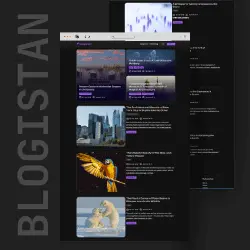

My
Projects
As a MERN stack developer, I built Blogistan using React and Appwrite, showcasing my skills in frontend and backend development.

Blogistan

My Blog

Self-taught MERN Developer crafting solutions with code.
Download ResumeAs a MERN stack developer, I built Blogistan using React and Appwrite, showcasing my skills in frontend and backend development.
I thinkworkis more important than education andcertificates, work defines more.
BSIT (Bachelor In IT)
Graduated (2020-24)
Your's can befirst!!😉
Let's Discuss Your ProjectAssalam O Alaikum! I’m Farman Ali, a self-taught MERN stack developer from Bahawalpur, Pakistan. I specialize in building full-stack web applications using MongoDB, Express.js, React, and Node.js. My journey into web development began with a passion for coding, fueled by free resources like YouTube tutorials and online courses from platforms like codedamn.com. With over 20 projects under my belt—such as Blogistan, My Blog, and Guess The Number—I’ve honed my skills to craft solutions that solve real-world problems. As a MERN stack developer, I focus on creating efficient, scalable web apps, from designing responsive frontends with React to managing backend logic with Node.js and MongoDB. Explore my portfolio at farmanali.fun to see how I can help you with your next project—Farman Ali is ready to turn your ideas into reality!
I’m Farman Ali, and as a MERN stack developer, I build full-stack web applications from scratch. With MongoDB, I design efficient databases to store and manage data seamlessly, as seen in projects like Blogistan. Express.js powers my APIs, ensuring smooth communication between frontend and backend—skills I’ve applied in My Blog. React lets me craft dynamic, user-friendly interfaces, while Node.js handles server-side logic with scalability in mind, evident in Guess The Number. My self-taught journey has equipped me to tackle both frontend and backend challenges, delivering end-to-end solutions. Whether it’s responsive design, API integration, or database optimization, Farman Ali brings a full-stack perspective to every project—check out my work to see my MERN stack developer expertise in action!
Farman Ali’s portfolio as a MERN stack developer showcases a range of projects that highlight my skills. Blogistan is a full-stack blog platform where I used React for a sleek, dynamic frontend and Appwrite for backend services like authentication and database management—a testament to my self-taught abilities. My Blog is another creation, blending React’s UI power with Node.js backend logic to manage content efficiently. Guess The Number, a fun interactive game, demonstrates my JavaScript proficiency, a core skill in my MERN stack toolkit. With over 20 projects completed, I’ve tackled challenges like responsive design, API development, and real-time functionality—explore them at farmanali.fun/projects to see why Farman Ali stands out as a MERN stack developer!
Farman Ali’s path to becoming a MERN stack developer is rooted in self-directed learning. I earned a BSIT from The Islamia University, Bahawalpur (2020–24), which gave me a theoretical base, but my real education came from grit and free resources. Certifications from codedamn.com—like Node.js, React, and Git Masterclass—sharpened my practical skills, each verified to prove my growth. YouTube channels like Code With Harry, Sherian Coding School, and Chai Aur Code were my mentors, teaching me JavaScript, React, and backend development with Node.js. I turned tutorials into tangible projects, mastering MongoDB, Express.js, React, and Node.js through persistence. As a self-taught MERN stack developer, Farman Ali’s journey shows that passion and practice can outshine formal training—my portfolio is the proof!
Hiring Farman Ali means choosing a MERN stack developer with real-world experience—over 20 projects like Blogistan and My Blog showcase my skills in MongoDB, Express.js, React, and Node.js. Self-taught developers bring a unique edge: I’ve solved problems through trial and error, not just textbooks. My adaptability shines in crafting tailored solutions, from database design to interactive UIs. Based in Bahawalpur, Pakistan, I offer global-ready skills—whether you need a local fix or an international app, Farman Ali delivers efficiency and dedication. Be the first to leave a testimonial and experience why my self-taught MERN stack developer approach stands out—let’s build something great together!
Need a website? Let’s work together — contact me!